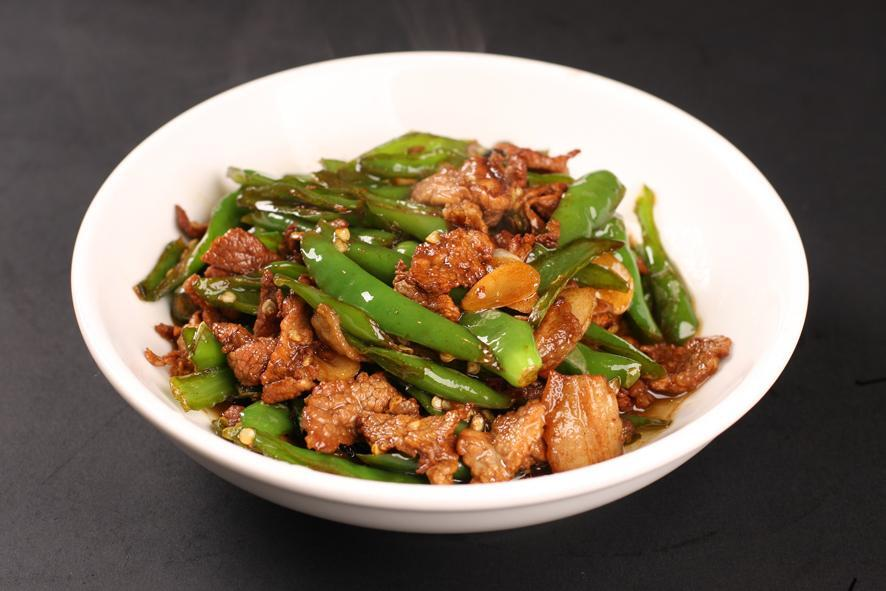

Pork cooked with Green Chili
- Recipe NamePork cooked with Green Chili
- Description
Dry pot potatoes is a traditional dish in Xiangtan, Hunan Province.
- LevelHigh
- Time Needed20min
- Main Ingredient150 grams of pork, 200 grams of green pepper
- Auxiliary Ingredient30g soy sauce, 50g sesame oil, 75ml chicken broth
- Process
1. Wash the green peppers and cut them into 3 cm long filaments, then salt them for a while.
2. Wash the pork, cut into 3 cm long, 5 mm wide, and 5 mm thick silk, mix well with salt and 40 grams of starch, and pickle it to taste.
3. Put the soy sauce and 35 grams of starch into a bowl, add chicken broth and blend into gorgon juice.
4. Heat the wok, add oil and heat until 70% hot, pour in the green peppers, stir fry over high heat, and take out.
5.Add 25 grams of sesame oil, heat, add shredded pork, stir-fry a few times, pour shredded green pepper, add a small amount of starch water, stir fry a few times and sprinkle with roasted sesame seeds.